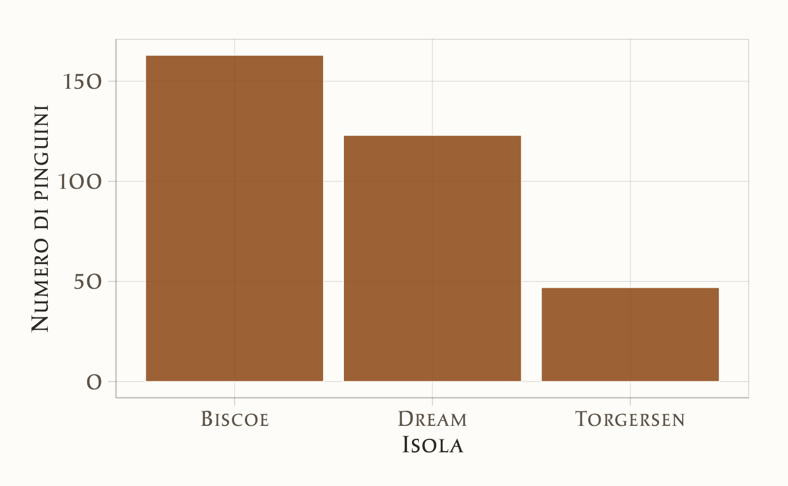
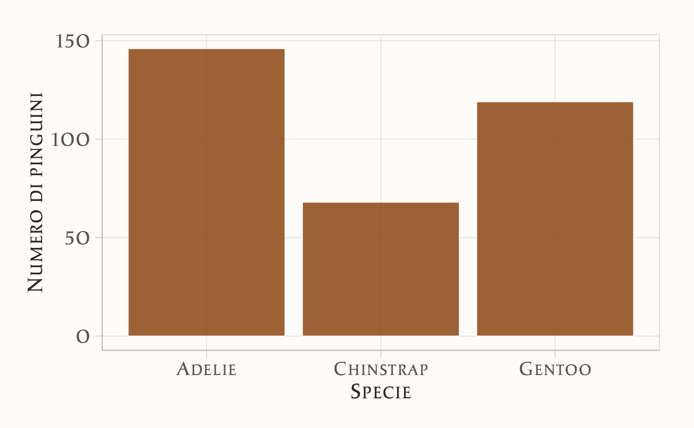
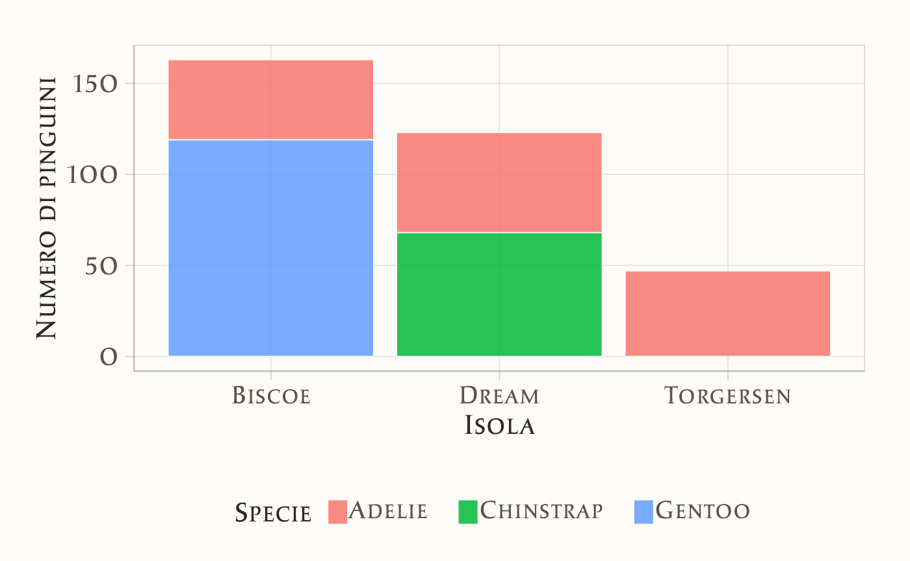
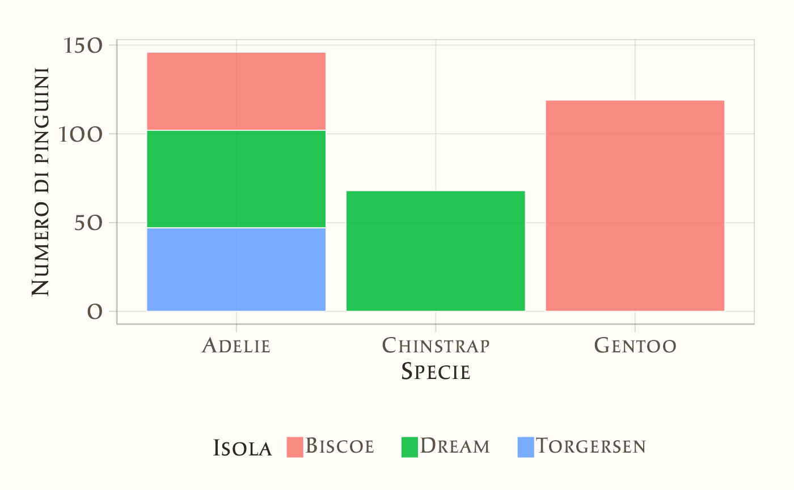
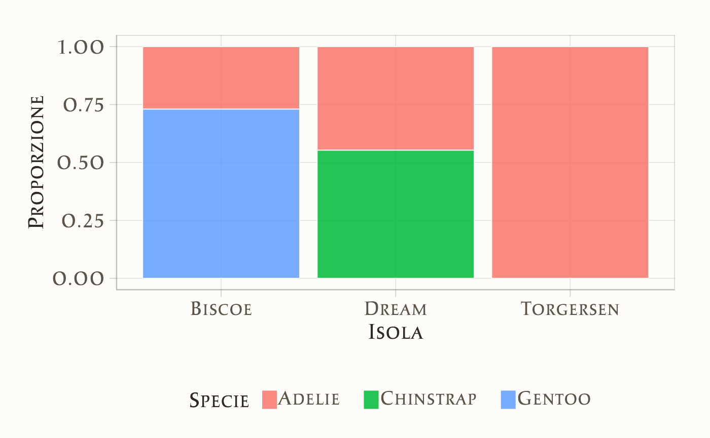
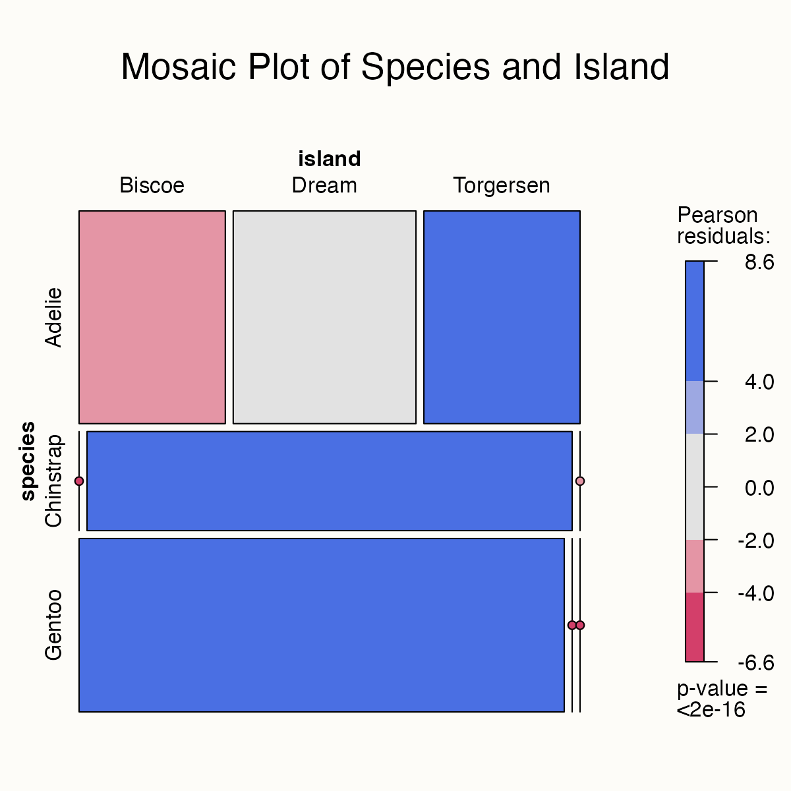
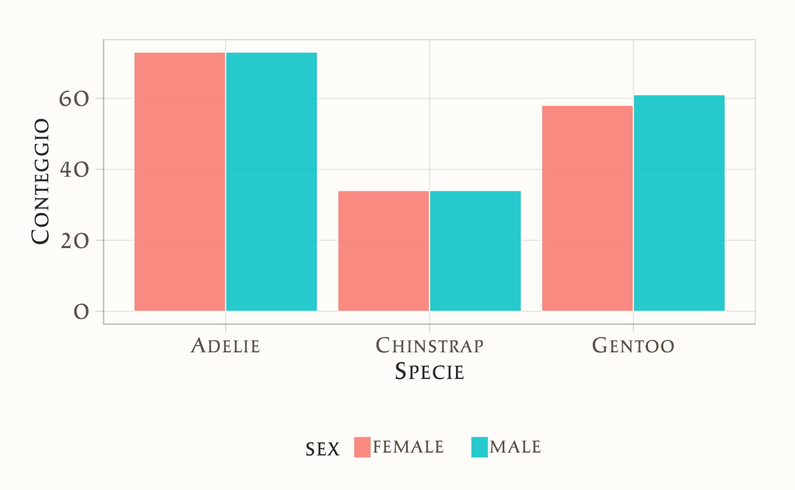
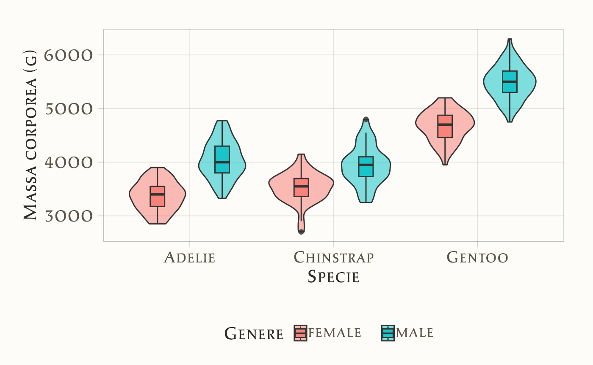

here::here("code", "_common.R") |>
source()
# Load packages
if (!requireNamespace("pacman")) install.packages("pacman")
pacman::p_load(tidyr, viridis, vcd, janitor)16 Esplorare i dati qualitativi
“The greatest value of a picture is when it forces us to notice what we never expected to see.”
– John W. Tukey, Exploratory Data Analysis
Introduzione
In questo capitolo ci concentreremo sull’analisi esplorativa dei dati (Exploratory Data Analysis, EDA) applicata ai dati qualitativi e categoriali (Tukey et al., 1977). In psicologia la raccolta di dati qualitativi e categoriali è estremamente frequente: si pensi alle variabili sociodemografiche (genere, stato civile, livello di istruzione), alle risposte a item a scelta multipla nei questionari, alle diagnosi cliniche, o alle categorie di comportamento osservato in laboratorio. Prima di procedere a modelli complessi, è fondamentale esplorare questi dati per comprenderne la struttura, individuare pattern ricorrenti e riconoscere eventuali anomalie.
L’EDA rappresenta il primo passo di ogni studio empirico. Con grafici e tabelle di frequenza possiamo farci un’idea immediata della distribuzione delle risposte, verificare se i dati sono equilibrati tra categorie, e osservare come certe caratteristiche si combinano. Ad esempio, in un’indagine clinica potremmo voler capire se i livelli di ansia riportati dai pazienti variano in base al genere o alla fascia di età; in uno studio sperimentale, se il successo in un compito dipende dalla condizione a cui il partecipante è stato assegnato.
In questo capitolo impareremo dunque a esplorare e visualizzare i dati qualitativi, passando da strumenti descrittivi come le tabelle di frequenza e le percentuali cumulative, fino a grafici più sofisticati (barplot, mosaic plot) che consentono di cogliere a colpo d’occhio le relazioni tra più variabili. L’obiettivo non è soltanto acquisire dimestichezza con le tecniche, ma anche sviluppare un atteggiamento critico, capace di riconoscere i limiti e le potenzialità delle rappresentazioni grafiche quando applicate a dati che riflettono la complessità dell’esperienza psicologica.
Panoramica del capitolo
- Calcolare proporzioni e organizzare i dati in tabelle di contingenza.
- Costruire grafici a barre per rappresentare dati qualitativi.
- Creare visualizzazioni per esplorare le relazioni tra due o più variabili qualitative.
16.1 Il dataset penguins
Per fornire esempi pratici, in questo capitolo utilizzeremo il dataset palmerpenguins, messo a disposizione da Allison Horst. I dati sono stati raccolti e resi disponibili da Dr. Kristen Gorman e dalla Palmer Station, parte del programma di ricerca ecologica a lungo termine Long Term Ecological Research Network. Il dataset contiene informazioni su 344 pinguini, appartenenti a 3 diverse specie, raccolte su 3 isole dell’arcipelago di Palmer, in Antartide. Per semplicità, i dati sono organizzati nel file penguins.csv.
Possiamo caricare i dati grezzi dal file penguins.csv in un data frame con il seguente comando:
Esaminiamo i dati.
glimpse(d)
#> Rows: 344
#> Columns: 8
#> $ species <chr> "Adelie", "Adelie", "Adelie", "Adelie", "Adelie", "A…
#> $ island <chr> "Torgersen", "Torgersen", "Torgersen", "Torgersen", …
#> $ bill_length_mm <dbl> 39.1, 39.5, 40.3, NA, 36.7, 39.3, 38.9, 39.2, 34.1, …
#> $ bill_depth_mm <dbl> 18.7, 17.4, 18.0, NA, 19.3, 20.6, 17.8, 19.6, 18.1, …
#> $ flipper_length_mm <int> 181, 186, 195, NA, 193, 190, 181, 195, 193, 190, 186…
#> $ body_mass_g <int> 3750, 3800, 3250, NA, 3450, 3650, 3625, 4675, 3475, …
#> $ sex <chr> "male", "female", "female", NA, "female", "male", "f…
#> $ year <int> 2007, 2007, 2007, 2007, 2007, 2007, 2007, 2007, 2007…Per semplicità, rimuoviamo le righe con valori mancanti con la seguente istruzione:
df <- d |>
drop_na()16.2 Tabelle di contingenza
Una tabella di contingenza è uno strumento che riassume i dati di due variabili categoriali, cioè variabili qualitative che assumono valori in un numero finito di categorie. Ogni cella della tabella indica quante osservazioni ricadono in una specifica combinazione di categorie delle due variabili.
Per esempio, supponiamo di avere due variabili del dataset df:
-
island: l’isola di provenienza dei pinguini, -
species: la specie di appartenenza (Adelie, Chinstrap, Gentoo).
Con la funzione tabyl() del pacchetto janitor possiamo costruire una tabella che mostra quante osservazioni appartengono a ciascuna combinazione di isola e specie:
df |>
tabyl(island, species) |>
adorn_totals(c("row", "col"))
#> island Adelie Chinstrap Gentoo Total
#> Biscoe 44 0 119 163
#> Dream 55 68 0 123
#> Torgersen 47 0 0 47
#> Total 146 68 119 333La tabella risultante riporta la distribuzione di tre specie di pinguini (Adelie, Chinstrap, Gentoo) rispetto a tre isole (Biscoe, Dream, Torgersen):
- Isola Biscoe: sono presenti 44 pinguini Adelie e 119 Gentoo. Nessun esemplare Chinstrap.
- Isola Dream: ospita 55 pinguini Adelie e 68 Chinstrap, ma nessun Gentoo.
- Isola Torgersen: conta solo 47 pinguini Adelie, senza esemplari delle altre specie.
Osservazioni:
- La specie Adelie è l’unica distribuita su tutte e tre le isole (44 su Biscoe, 55 su Dream, 47 su Torgersen).
- La specie Chinstrap compare esclusivamente su Dream (68 esemplari).
- La specie Gentoo si trova soltanto su Biscoe (119 esemplari).
Questa tabella evidenzia che la distribuzione delle specie non è uniforme: alcune sono presenti solo in determinate isole, mentre altre (come gli Adelie) sono più diffuse. In termini di analisi esplorativa, le tabelle di contingenza permettono quindi di individuare pattern e differenze tra categorie, fornendo una prima descrizione della relazione tra due variabili qualitative.
16.3 Proporzioni di riga e di colonna
Finora ci siamo concentrati sui conteggi assoluti. Tuttavia, in molti casi è più informativo osservare le proporzioni relative.
- Le proporzioni di riga descrivono come si distribuiscono le categorie di una variabile all’interno di ciascun gruppo dell’altra.
- Le proporzioni di colonna, al contrario, mostrano la distribuzione di una variabile rispetto alle categorie dell’altra.
Questi calcoli si ottengono facilmente a partire dalla tabella di contingenza.
16.3.1 Proporzioni di riga (specie per isola)
df %>%
tabyl(island, species) %>% # Tabella di contingenza
adorn_percentages("row") %>% # Proporzioni rispetto a ciascuna isola
adorn_totals("col") %>% # Totali di riga
adorn_pct_formatting(digits = 2)
#> island Adelie Chinstrap Gentoo Total
#> Biscoe 26.99% 0.00% 73.01% 100.00%
#> Dream 44.72% 55.28% 0.00% 100.00%
#> Torgersen 100.00% 0.00% 0.00% 100.00%Questo output mostra, per ogni isola, la percentuale di pinguini appartenenti a ciascuna specie.
16.3.2 Proporzioni di colonna (isole per specie)
df |>
tabyl(island, species) |>
adorn_percentages("col") |> # Proporzioni rispetto a ciascuna specie
adorn_totals("row") |>
adorn_pct_formatting(digits = 2)
#> island Adelie Chinstrap Gentoo
#> Biscoe 30.14% 0.00% 100.00%
#> Dream 37.67% 100.00% 0.00%
#> Torgersen 32.19% 0.00% 0.00%
#> Total 100.00% 100.00% 100.00%Qui vediamo, per ciascuna specie, su quali isole si distribuiscono i pinguini e con quale proporzione.
In sintesi, le proporzioni di riga e colonna forniscono un dettaglio numerico che aiuta a interpretare meglio le relazioni tra le variabili categoriali.
16.4 Grafici a barre
I grafici a barre sono uno degli strumenti più utilizzati per rappresentare visivamente i dati categoriali. Essi consentono di confrontare le frequenze delle categorie in modo immediato, mostrando chiaramente quali valori sono più comuni o più rari nel campione.
16.4.1 Grafico a barre con una variabile
Nel caso più semplice, un grafico a barre rappresenta una sola variabile categoriale. Le categorie sono riportate lungo un asse (di solito l’asse orizzontale) e la lunghezza o altezza delle barre è proporzionale al numero di osservazioni per ciascuna categoria.
Ad esempio, per i dati sui pinguini possiamo visualizzare il numero totale di esemplari osservati in ciascuna isola:
ggplot(df, aes(x = island)) +
geom_bar() +
xlab("Isola") +
ylab("Numero di pinguini") 
Allo stesso modo, possiamo costruire un grafico a barre che mostra la distribuzione delle specie:
ggplot(df, aes(x = species)) +
geom_bar() +
xlab("Specie") +
ylab("Numero di pinguini")
Questi grafici permettono di confrontare rapidamente le frequenze delle categorie, mettendo in evidenza quali specie o quali isole sono più rappresentate.
16.4.2 Grafico a barre con due variabili
Un grafico a barre può essere esteso per visualizzare simultaneamente due variabili categoriali. In questo caso, una variabile viene posta sull’asse delle ascisse, mentre la seconda è distinta tramite colori diversi o barre impilate.
Ad esempio, possiamo osservare come le diverse specie di pinguini si distribuiscono sulle isole:
ggplot(df, aes(x = island, fill = species)) +
geom_bar(position = "stack") +
xlab("Isola") +
ylab("Numero di pinguini") +
labs(fill = "Specie") 
Oppure, invertendo i ruoli delle due variabili, possiamo rappresentare le specie sull’asse delle ascisse e distinguere le isole tramite colori:
ggplot(df, aes(x = species, fill = island)) +
geom_bar(position = "stack") +
xlab("Specie") +
ylab("Numero di pinguini") +
labs(fill = "Isola")
Questi grafici permettono di esplorare visivamente l’associazione tra due variabili qualitative.
16.4.3 Frequenze relative
Oltre alle frequenze assolute, è spesso utile rappresentare le frequenze relative (cioè le proporzioni). Questo approccio elimina l’effetto del numero totale di osservazioni, rendendo più facile confrontare le distribuzioni tra gruppi di dimensioni diverse.
Ad esempio, il grafico seguente mostra la composizione relativa delle specie per ogni isola:
ggplot(df, aes(x = island, fill = species)) +
geom_bar(position = "fill") +
xlab("Isola") +
ylab("Proporzione") +
labs(fill = "Specie")
Qui ogni barra è normalizzata a 1: l’altezza di ciascun segmento rappresenta la proporzione di una specie all’interno dell’isola. In questo modo è più facile capire quale specie prevale in ciascun contesto, indipendentemente dal numero complessivo di pinguini osservati.
16.5 Mosaic plot
Il Mosaic plot è una tecnica di visualizzazione particolarmente adatta per rappresentare le tabelle di contingenza. A differenza di un semplice grafico a barre impilate, questo tipo di grafico mostra contemporaneamente:
- la distribuzione interna delle categorie di una variabile,
- la dimensione relativa complessiva dei gruppi della variabile principale.
In pratica, non ci dice solo come le categorie si suddividono all’interno dei gruppi, ma anche quanto grandi sono i gruppi stessi.
mosaic(
~ species + island,
data = df,
main = "Mosaic Plot of Species and Island",
shade = TRUE
)
Come leggere un mosaic plot.
-
Dimensioni dei rettangoli
- La larghezza rappresenta la dimensione relativa dei gruppi della variabile principale (
island). - L’altezza indica la proporzione delle categorie della variabile secondaria (
species) all’interno di ciascun gruppo.
- La larghezza rappresenta la dimensione relativa dei gruppi della variabile principale (
-
Colori (opzione
shade = TRUE)- I colori evidenziano deviazioni dalle frequenze attese in caso di indipendenza statistica.
- Un colore scuro segnala che in quel gruppo la frequenza osservata è molto diversa da quella attesa sotto indipendenza.
-
Interpretazione pratica
- Un rettangolo largo e alto segnala una categoria numerosa in un gruppo consistente.
- Un rettangolo stretto o sottile indica una categoria rara o assente in quel gruppo.
In questo esempio, vediamo chiaramente che:
- gli Adelie sono presenti in tutte le isole,
- i Chinstrap compaiono solo a Dream,
- i Gentoo solo a Biscoe.
Il Mosaic plot è quindi utile per cogliere schemi di associazione tra variabili categoriali e valutare rapidamente quali combinazioni sono predominanti o assenti.
16.6 Confronto tra gruppi
Un aspetto centrale dell’analisi esplorativa consiste nel confrontare gruppi diversi. Questo ci permette di mettere in evidenza differenze e somiglianze, osservare variazioni e individuare tendenze. Il confronto può riguardare:
- variabili categoriali tra loro (ad esempio distribuzione di genere nelle diverse specie), oppure
- variabili numeriche rispetto a categorie (ad esempio come varia il peso corporeo tra specie e generi).
16.6.1 Confronto tra variabili categoriali
Per confrontare due variabili qualitative, possiamo utilizzare un grafico a barre con suddivisione per gruppi. Ad esempio, vediamo come si distribuisce il genere dei pinguini (maschio/femmina) all’interno delle tre specie:
ggplot(df, aes(x = species, fill = sex)) +
geom_bar(position = "dodge") +
xlab("Specie") +
ylab("Conteggio")
In questo grafico le barre affiancate permettono di confrontare facilmente, per ciascuna specie, il numero di maschi e femmine.
16.6.2 Confronto tra variabili numeriche e categorie
Spesso è ancora più interessante osservare come una variabile numerica varia tra gruppi. Questo approccio ci consente di capire se gruppi diversi tendono ad avere valori simili o differenti. Prendiamo come esempio la variabile body_mass_g (peso corporeo in grammi), e confrontiamola in base a specie e genere.
ggplot(df, aes(x = species, y = body_mass_g, fill = sex)) +
geom_violin(
position = position_dodge(width = 0.9), alpha = 0.5
) +
geom_boxplot(
position = position_dodge(width = 0.9), width = 0.2, alpha = 0.8
) +
xlab("Specie") +
ylab("Massa corporea (g)") +
labs(fill = "Genere")
Questo grafico combina due livelli di informazione:
-
Grafico a violino (aree colorate)
- Mostra l’intera distribuzione dei pesi per ciascun gruppo (specie × genere).
- Più l’area è larga in un punto, più pinguini hanno un peso vicino a quel valore.
-
Boxplot (linee centrali)
- Riassume visivamente i dati, mostrando mediana, quartili e variabilità.
- Aiuta a confrontare rapidamente i livelli tipici e la dispersione tra gruppi.
Da questo tipo di grafico possiamo osservare:
- Differenze tra generi all’interno di una specie: ad esempio, se i maschi tendono a essere più pesanti delle femmine.
- Differenze tra specie: quali specie hanno in generale pinguini più pesanti o più leggeri.
- Sovrapposizioni: se i pesi di maschi e femmine si distinguono nettamente o se i due gruppi hanno valori simili.
In questo modo, possiamo individuare sia differenze sistematiche sia aree di variabilità comune tra i gruppi.
Bibliografia
Tukey, J. W. et al. (1977). Exploratory data analysis (Vol. 2). Springer.